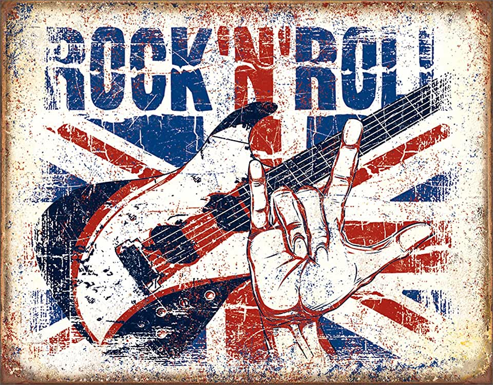

Жанр рок-н-ролл
Рок-музыка — жанр музыки, характеризующийся ярко выраженным ритмом. Так же является обобщённым названием для ряда музыкальных стилей и направлений. Многообразие жанров и поджанров рок-музыки градируется от "легкого" до "тяжёлого". Рок зародился в начале 1950-х в США и Западной Европе.
Виды рока
Из-за того, что рок-музыка постоянно поддается трансформации, создано огромное количество видов и подвидов этого направления. Главным образом рок делится на два течения. Первое – легкий рок. Он более мелодичен, его легче слушать и в нем присутствует меньше басов и больше легких музыкальных связок. К этому течению относится альтернативный рок, поп-рок, гроул и другие. Второе течение – тяжелый рок. Он более груб на восприятие, ввиду того, что переполнен резкими басами, громогласными ударными и кричащим вокалом солиста. К нему относятся виды блэк-метал и дэт-метал.
Стили и направления
- No Wave
- Альтернативный рок
- Блюз-рок
- Гаражный рок
- Глэм-рок
- Инструментальный рок
- Кантри-рок
- Мерсибит
- Метал
- Новая волна
- Паб-рок
- Панк рок
- Панк-метал
- Пост-рок
- Постпанк
- Прогрессивный рок
- Прото-панк
- Психоделический рок
- Рок-н-ролл
- Рэп-рок
- Сатерн-рок
- Сёрф-рок
- Скиффл
- Фанк-рок
- Фолк-рок
- Хард-рок
- Хардкор
- Хартленд-рок
- Экспериментальный рок
